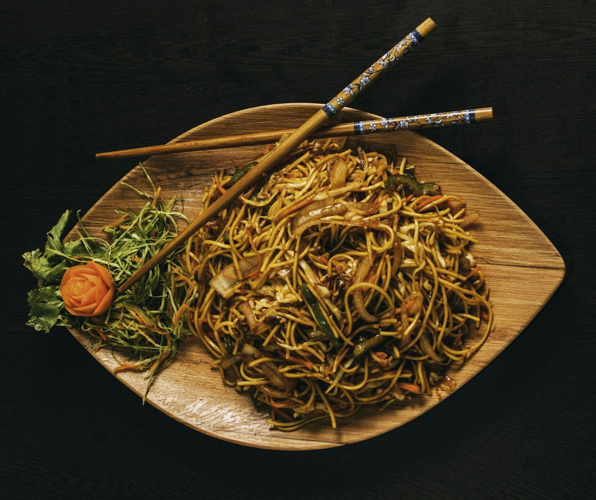
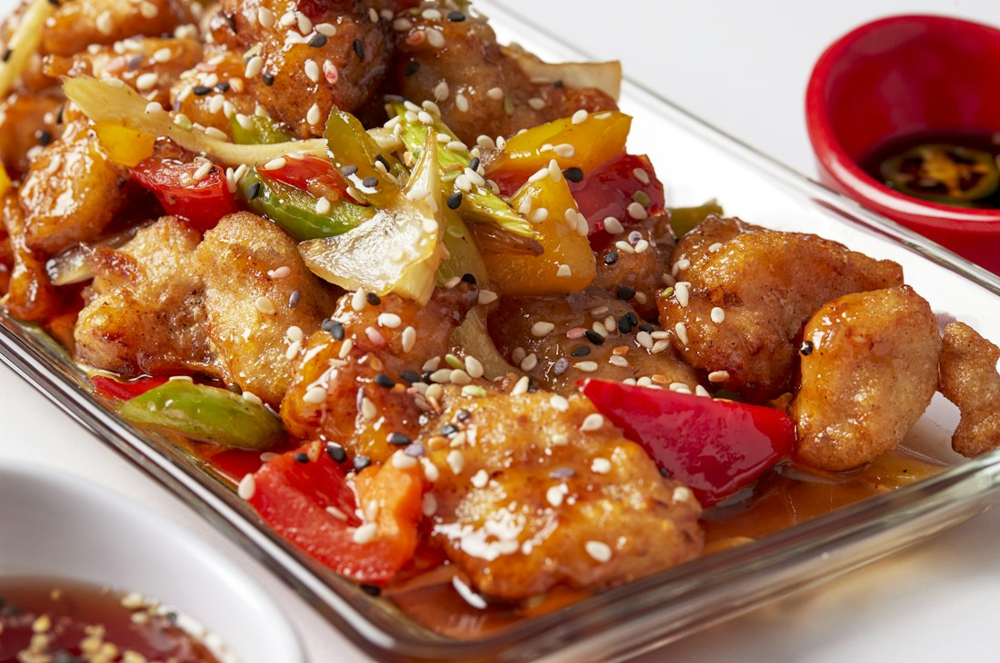
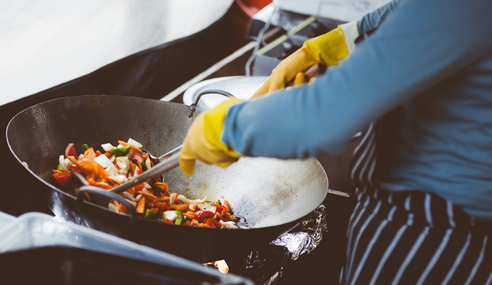

Whole fish steamed, then dressed with sizzling oil and soy.
Heat: Not spicySteamedFishGluten
Details & options +
Steamed whole and dressed at the table with hot oil poured over ginger and spring onion. Ask about the day's fish.
Main ingredientsWhole fish · ginger · spring onion · light soy
Quantity
Threeplateswe’dcookforourselves.
01
Bamboo-steamed
Lantern dim sum basket 点心拼
Four kinds of dumpling, pleated by hand in the afternoon and steamed only when you order. The basket arrives still hissing.
Prawn
Chicken
Shiitake
Water chestnut
Rs. 1,950

02
Hand-pulled, wok-tossed
Wok-tossed hand-pulled noodles 拉面
Dough stretched and folded until it becomes thick, chewy noodles, then tossed through a smoking wok until the edges caramelise.
Hand-pulled wheat noodles
Dark soy
Beansprouts
Spring onion
Rs. 1,350

03
Double-fried
Sweet & sour chicken 咕噜鸡
Fried twice for a shell that survives the sauce. Bright, sticky and gone in minutes.
Chicken thigh
Peppers
Pineapple
Toasted sesame
Rs. 1,250

Illustrative photography
Firefirst.Thenpatience.
The kitchen is built around three wok burners and a wall of bamboo steamers. Most plates spend less than two minutes over the flame, so everything else happens before: dumplings pleated in the afternoon, sauces built in the morning, rice cooked a day ahead so it fries dry and separate.
01Steam
Dumplings and fish go into stacked bamboo baskets over a rolling boil. Gentle, wet heat keeps wrappers glassy and fish soft.
02Wok hei
A seasoned carbon-steel wok over a jet burner gives the smoky edge Cantonese cooks call wok hei — the breath of the wok. Seconds, not minutes.
03Rest and dress
Sauces and chilli oil go on at the pass, never earlier, so crisp things stay crisp and noodles stay springy on the way to your table.
RED LANTERN is an independent demonstration brand. The kitchen description is illustrative.
Bringthewholetable.
Set menus served family-style to the centre of the table. Prices are per guest and illustrative; drinks and service are not included.
Group dining packages compared
Package detail
二人套餐Wok for two
Most courses灯笼宴Lantern banquet
夜市宴Night market feast
Price
Rs. 2,400 per guest
Rs. 3,900 per guest
Rs. 5,200 per guest
Guests
2–3 guests
4–8 guests
9–20 guests
Courses
4 dishes
7 courses
9 courses, shared
Includes
Dim sum basket (8 pcs)
One wok special
Hand-pulled noodles
Egg fried rice
Hot & sour soup
Dim sum selection
Salt & pepper prawns
Two wok specials
Vegetarian plate
Lantern fried rice
Seasonal fruit
Everything in the banquet
Steamed whole fish
Cumin lamb
Claypot rice
Private end of the dining room
Notice
Order on the night
24 hours
72 hours
Enquire
Swipe to compare →
VisitREDLANTERN.
Check opening hours below
Opening hours
Monday
Closed
Tuesday
12:30 – 23:30
Wednesday
12:30 – 23:30
Thursday
12:30 – 23:30
Friday
12:30 – 01:00
Saturday
12:30 – 01:00
Sunday
12:30 – 23:00
Address12 Example StreetYour CitySample address for this demonstration
Most dishes have a heat setting under “Details & options”. The chilli marks show the default level. For a real order, ask the kitchen to confirm heat and ingredients.
Are the recipe notes allergen information?+
No. They list main ingredients in this sample menu only. Discuss allergies and kitchen handling with staff before ordering.
Does checkout or booking charge me?+
No. Your order is stored in this browser, and checkout and booking create demo confirmations only. Nothing is sent or charged.
Do you take large groups?+
The group packages above are for 2 to 20 guests. Send an enquiry with the date and party size and the demo will show how a reservation flow works.